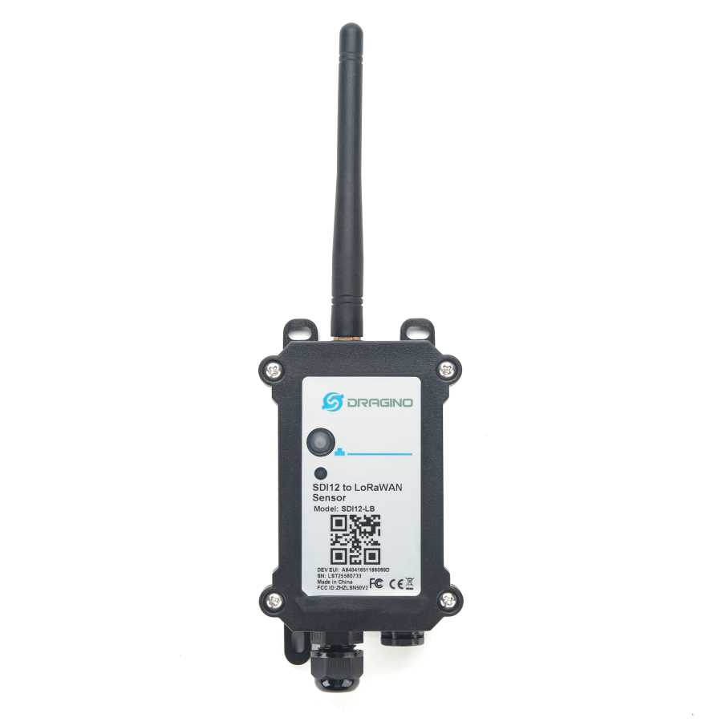
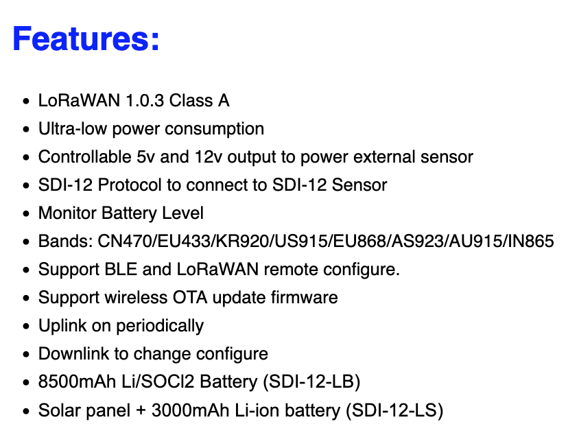
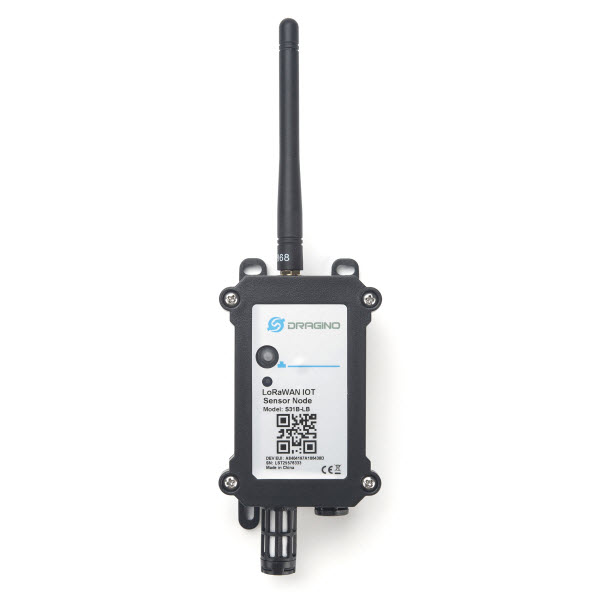
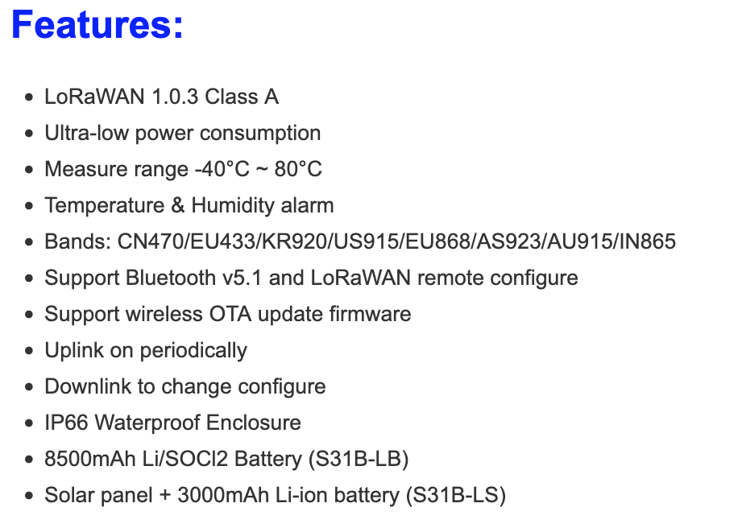
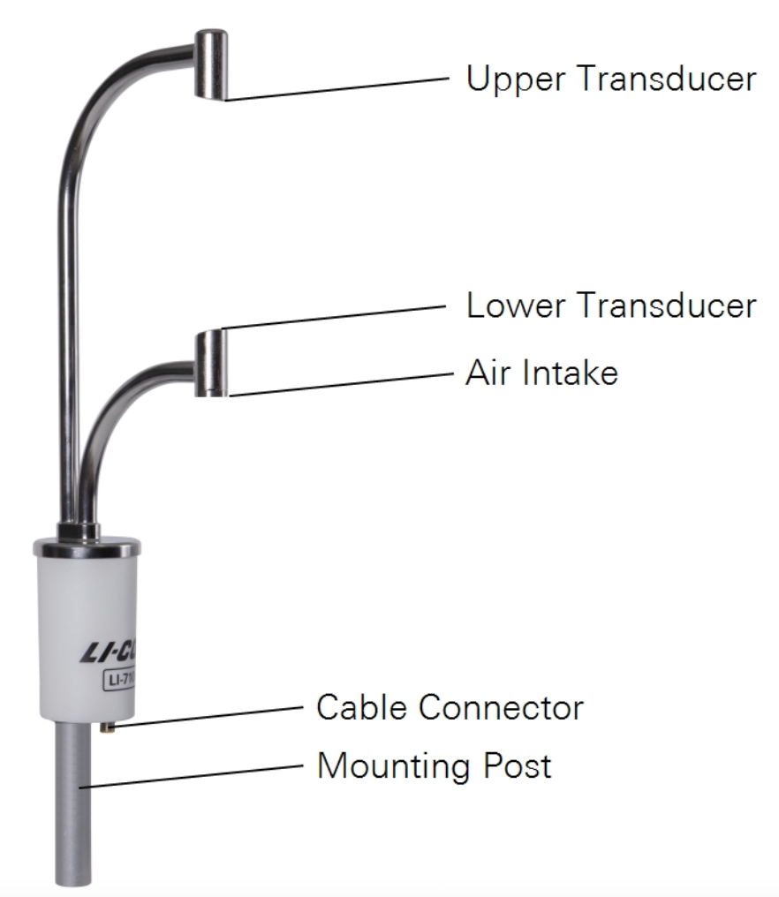
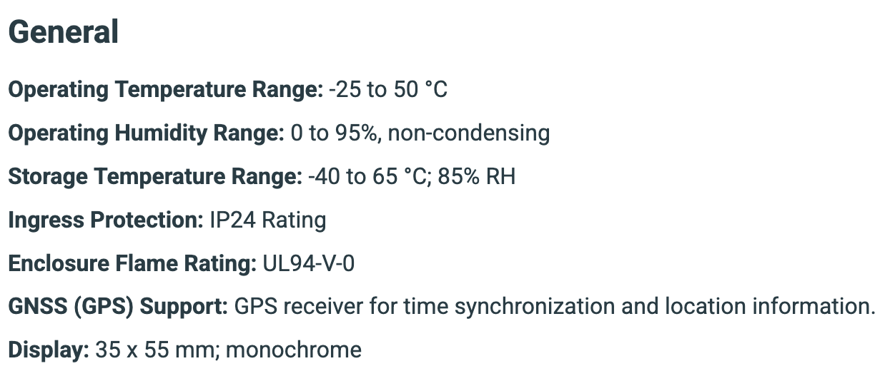
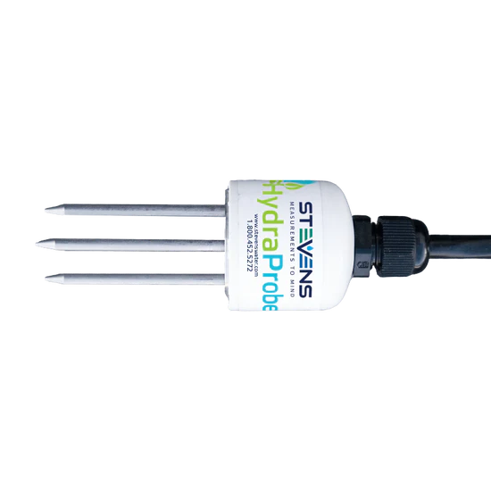
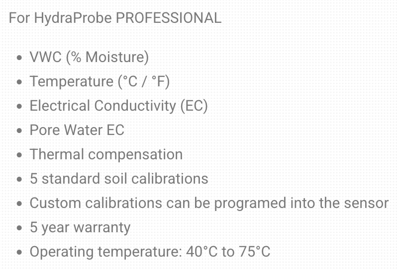
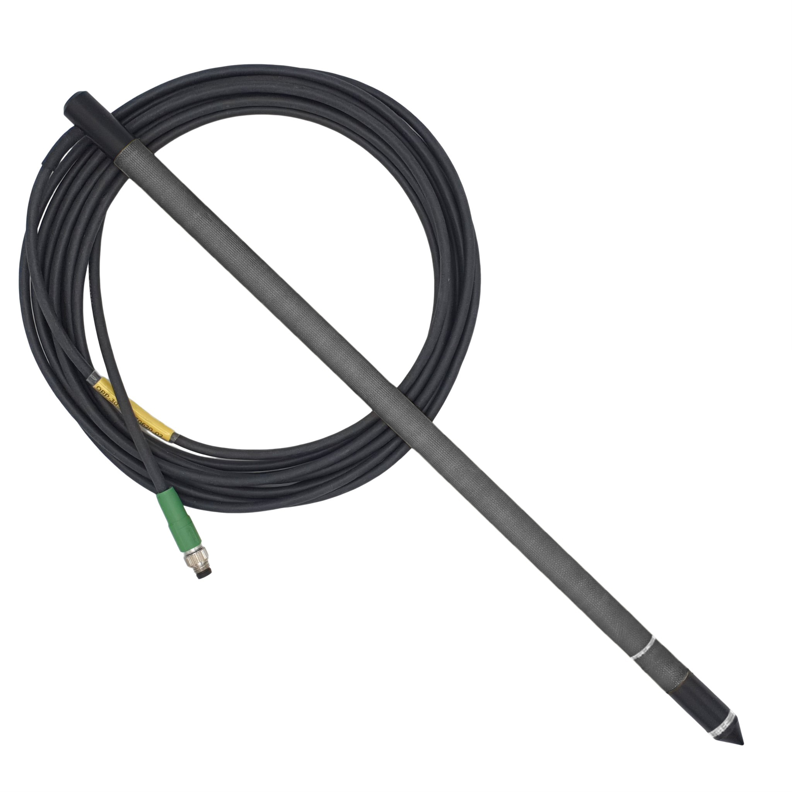
Parameters: Redox (Pt), Temperature
Units: Redox in mV, Temperature in °C
Electrodes: 1 x Redox, 1 x Temperature
Electrode positions: Redox: 30 cm, Temperature: 29 cm (distance from probe top side)
Probe dimensions: Length: 39 cm, Diameter: 1.4 cm
Probe weight: 0.17 kg
Cable: 5-meter, connector 4 pole
Measuring range:
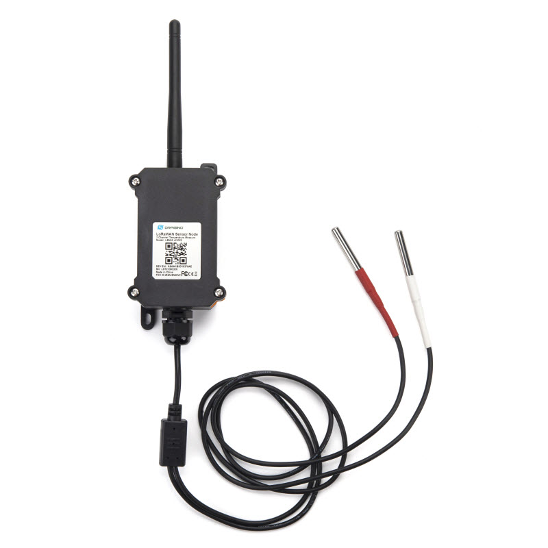
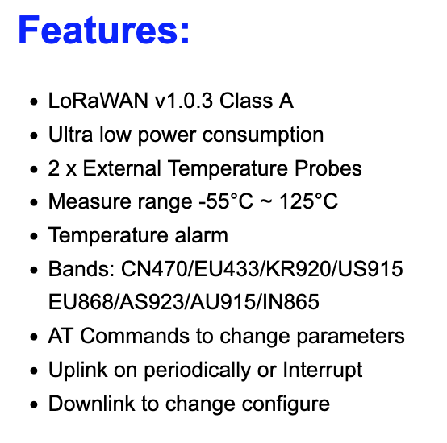
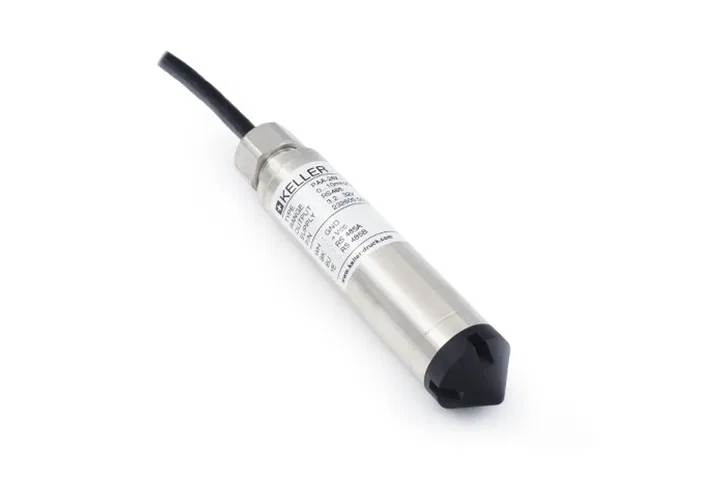
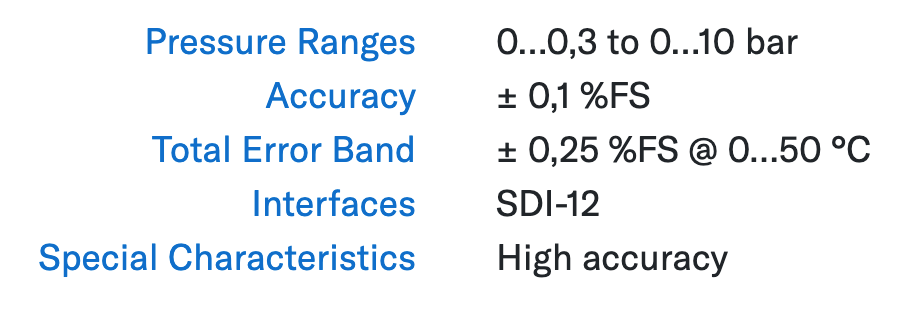
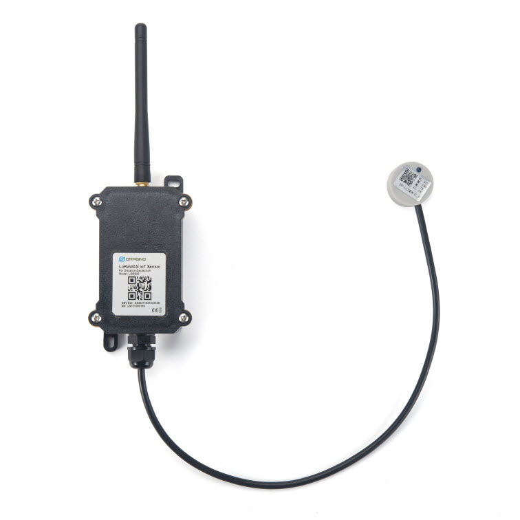
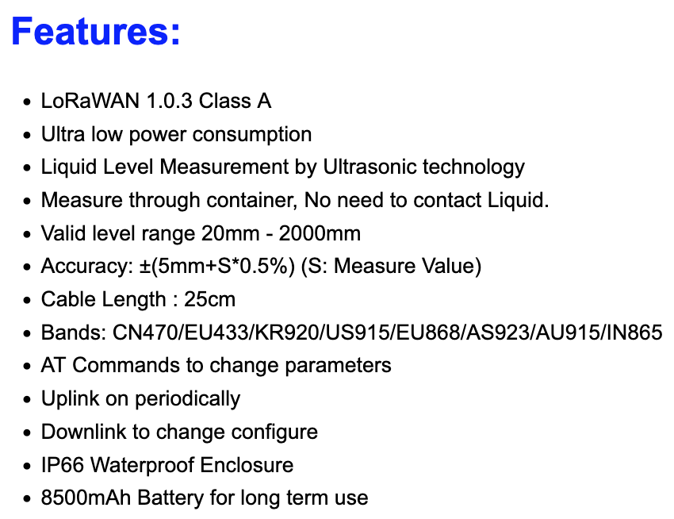